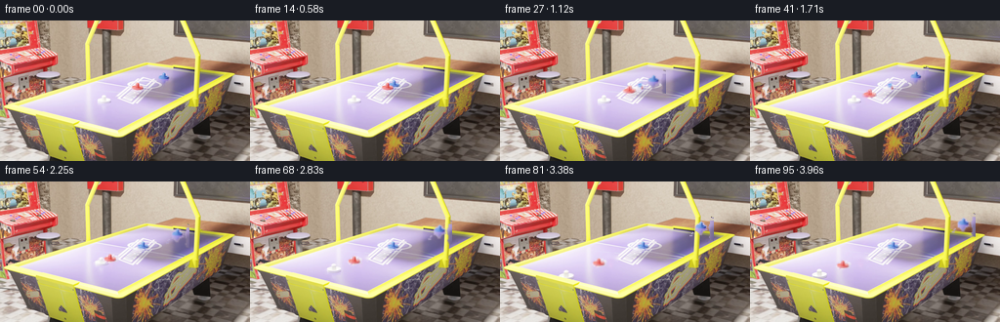

CODING AGENTS AS PIXEL WORLD MODELS
traex/GPT-5.6-Sol · pcve_0000
点击播放 · 原生 RGB 像素
编辑前的完整原视频
上方为编辑结果；原视频是模型获准使用的输入。下方为逐轮保存的编辑候选。
逐轮保存的候选
回放视频、检查图与代码变化。
每份候选均可单独播放。实际图片检查记录在下方工具轨迹中。
候选 01播放与检查图
点击播放 · 原生 RGB 像素

展开代码变化
--- 上一保存版本 +++ 本次保存版本 @@ -0,0 +1,154 @@ +"""Generate the 4x-mass red-mallet counterfactual for this PixelWorld case. + +The unforced flight up to the first contact is copied exactly. Afterwards the +source's collision phases are retimed with the 1-D elastic-collision factors: +for an incoming unit mass and a stationary mass 4, v_in'=-3/5 v and +v_red'=2/5 v. At the next (4:1) collision the red mallet retains 3/5 of its +incoming speed while the downstream body receives 8/5 of that speed. +""" +from pathlib import Path +import cv2 +import numpy as np +from artifact_io import save + +CASE_DIR = Path(__file__).resolve().parent +N, H, W = 96, 144, 256 + + +def sample(frames, time): + """Linear temporal sample, useful for smooth sub-frame retiming.""" + time = float(np.clip(time, 0, len(frames) - 1)) + lo = int(np.floor(time)); hi = min(lo + 1, len(frames) - 1) + a = time - lo + if hi == lo: + return frames[lo].astype(np.float32) + return frames[lo].astype(np.float32) * (1.0 - a) + frames[hi].astype(np.float32) * a + + +def shifted_overlay(frame, sprite_rgb, sprite_alpha, x, y): + """Alpha-composite a small sprite with sub-pixel translation.""" + h, w = sprite_alpha.shape + ix, iy = int(np.floor(x)), int(np.floor(y)) + fx, fy = x - ix, y - iy + M = np.float32([[1, 0, fx], [0, 1, fy]]) + rgb = cv2.warpAffine(sprite_rgb, M, (w, h), flags=cv2.INTER_LINEAR, + borderMode=cv2.BORDER_REPLICATE) + alpha = cv2.warpAffine(sprite_alpha, M, (w, h), flags=cv2.INTER_LINEAR, + borderMode=cv2.BORDER_CONSTANT, borderValue=0) + x0, y0 = max(0, ix), max(0, iy) + x1, y1 = min(W, ix + w), min(H, iy + h) + if x1 <= x0 or y1 <= y0: + return + sx0, sy0 = x0 - ix, y0 - iy + sx1, sy1 = sx0 + (x1 - x0), sy0 + (y1 - y0) + aa = alpha[sy0:sy1, sx0:sx1, None] + frame[y0:y1, x0:x1] = frame[y0:y1, x0:x1] * (1-aa) + rgb[sy0:sy1, sx0:sx1] * aa + + +def make_sprite(image, clean, box, core_mask): + """Cut out a color-defined object while retaining antialiased edge pixels.""" + x0, y0, x1, y1 = box + crop = image[y0:y1, x0:x1].astype(np.float32) + ref = clean[y0:y1, x0:x1].astype(np.float32) + core = core_mask[y0:y1, x0:x1].astype(np.uint8) + # The color core is certain foreground. Nearby pixels are admitted only if + # they differ from the clean plate, preserving the source's shaded rim. + halo = cv2.dilate(core, np.ones((5, 5), np.uint8), iterations=1) + delta = np.max(np.abs(crop-ref), axis=2) + support = ((halo > 0) & ((delta > 5) | (core > 0))).astype(np.float32) + alpha = cv2.GaussianBlur(support, (0, 0), 0.55) + alpha[core > 0] = 1.0 + alpha = np.clip(alpha, 0, 1) + return crop, alpha + + +def generate(): + src = np.load(CASE_DIR / "source_pixels.npz")["rgb"] + assert src.shape == (N, H, W, 3) and src.dtype == np.uint8 + + # HSV cores provide robust numeric masks for the colored moving bodies. + hsv0 = cv2.cvtColor(src[0], cv2.COLOR_RGB2HSV) + h0, s0, v0 = cv2.split(hsv0) + blue_core = (h0 >= 100) & (h0 < 145) & (s0 > 50) & (v0 > 90) + blue_rgb, blue_alpha = make_sprite(src[0], src[95], (156, 47, 181, 73), blue_core) + # Position of this crop's blue-body center in source frame 0. + blue_crop_center = np.array([168.25-156, 59.05-47], np.float32) + + hsv20 = cv2.cvtColor(src[20], cv2.COLOR_RGB2HSV) + hr, sr, vr = cv2.split(hsv20) + red_core = (((hr < 12) | (hr > 165)) & (sr > 55) & (vr > 135)) + # Frame 0 is clean at nearly all of this mid-flight location. + red_rgb, red_alpha = make_sprite(src[20], src[0], (121, 62, 143, 82), red_core) + ys, xs = np.where(red_core[62:82, 121:143]) + red_crop_center = np.array([xs.mean(), ys.mean()], np.float32) + + # Mask of the blue body left stationary by the factual first collision. + # Only its right side is replaced; retaining the contact edge avoids + # cutting into the red mallet during the first few post-contact frames. + static_blue = np.zeros((H, W), np.uint8) + roi = np.max(np.abs(src[30].astype(np.int16)-src[0].astype(np.int16)), axis=2) + static_blue[52:75, 146:161] = (roi[52:75, 146:161] > 7).astype(np.uint8) * 255 + static_blue = cv2.dilate(static_blue, np.ones((3, 3), np.uint8), iterations=1) + static_blue_soft = cv2.GaussianBlur(static_blue.astype(np.float32)/255, (0, 0), .75) + + # The factual final red position must be vacated once the 4x mallet keeps + # moving. Inpainting is local and uses only neighboring source RGB pixels. + hsv95 = cv2.cvtColor(src[95], cv2.COLOR_RGB2HSV) + hh, ss, vv = cv2.split(hsv95) + red_final_core = (((hh < 12) | (hh > 165)) & (ss > 52) & (vv > 130)) + red_remove = np.zeros((H, W), np.uint8) + red_remove[69:87, 102:125] = red_final_core[69:87, 102:125].astype(np.uint8) * 255 + red_remove = cv2.dilate(red_remove, np.ones((5, 5), np.uint8), iterations=1) + + out = np.empty((N, H, W, 3), np.uint8) + contact1 = 14.0 + contact2 = 52.0 + contact3 = 82.0 + + for t in range(N): + if t <= 14: + # Mass does not alter unconstrained motion: exact factual history. + out[t] = src[t] + continue + if t <= contact2: + # Red receives 2/(1+4)=0.4 of the original transfer speed. + source_t = 14.0 + (t-14.0) * (16.0/(contact2-14.0)) + elif t <= contact3: + # The downstream unit body receives 8/5 of the slower red speed, + # i.e. 0.64 of its factual equal-mass speed. + source_t = 30.0 + (t-contact2) * (19.0/(contact3-contact2)) + else: + # Downstream contact has completed; preserve the settled source set. + source_t = float(t) + frame = sample(src, source_t) + + # Remove the factual stationary blue body and draw its 3/5-speed recoil. + # Source frame 0 is the clean plate on the exposed (right) side. + if t <= contact2: + a = static_blue_soft[..., None] + frame = frame*(1-a) + src[0].astype(np.float32)*a + blue_center = np.array([146.0 + 0.90*(t-contact1), + 65.2 - 0.27*(t-contact1)], np.float32) + blue_xy = blue_center - blue_crop_center + shifted_overlay(frame, blue_rgb, blue_alpha, float(blue_xy[0]), float(blue_xy[1])) + + if t > contact2: + # A 4:1 red-to-unit collision leaves 3/5 of the incoming 0.4x + # velocity: 0.24 times the factual red speed, rather than stopping. + base_u8 = np.clip(frame, 0, 255).astype(np.uint8) + clean = cv2.inpaint(base_u8, red_remove, 3, cv2.INPAINT_TELEA).astype(np.float32) + m = cv2.GaussianBlur(red_remove.astype(np.float32)/255, (0, 0), .65)[..., None] + frame = frame*(1-m) + clean*m + red_center = np.array([113.0 - 0.43*(t-contact2), + 78.3 + 0.16*(t-contact2)], np.float32) + red_xy = red_center - red_crop_center + shifted_overlay(frame, red_rgb, red_alpha, float(red_xy[0]), float(red_xy[1])) + + out[t] = np.clip(np.rint(frame), 0, 255).astype(np.uint8) + + return out + + +if __name__ == "__main__": + frames = generate() + save(frames, CASE_DIR)
候选 02播放与检查图
点击播放 · 原生 RGB 像素

展开代码变化
--- 上一保存版本
+++ 本次保存版本
@@ -118,8 +118,11 @@
# i.e. 0.64 of its factual equal-mass speed.
source_t = 30.0 + (t-contact2) * (19.0/(contact3-contact2))
else:
- # Downstream contact has completed; preserve the settled source set.
- source_t = float(t)
+ # Downstream contact has completed. Hold its settled frame rather
+ # than jumping back to wall-clock source time; the later factual
+ # frames differ only through encoder noise, and that jump would
+ # otherwise create an artificial full-frame flicker at frame 83.
+ source_t = 49.0
frame = sample(src, source_t)
# Remove the factual stationary blue body and draw its 3/5-speed recoil.
候选 03播放与检查图
可观测工具轨迹
实际执行的命令与返回图片。
命令 1exit 0
/bin/bash -lc "cat prompt.txt && printf '\\n--- GENERATION_RULES ---\\n' && cat GENERATION_RULES.md"
命令 2exit 0
/bin/bash -lc "find . -maxdepth 3 -type f -printf '%p\\n' | sort && printf '\\n--- DIRS ---\\n' && find . -maxdepth 2 -type d -printf '%p\\n' | sort"
命令 3exit 0
/bin/bash -lc "cat source_info.json; printf '\\n--- task_spec ---\\n'; cat task_spec.json; printf '\\n--- artifact_io ---\\n'; sed -n '1,240p' artifact_io.py"
命令 4exit 0
/bin/bash -lc "python - <<'PY'
import numpy as np
x=np.load('source_pixels.npz'); print(x.files)
for k in x.files:
a=x[k]; print(k,a.shape,a.dtype,a.min(),a.max())
PY
ffprobe -v error -show_entries stream=codec_name,width,height,r_frame_rate,nb_frames,duration -of default=nw=1 source_video.mp4 || true"命令 5exit 2
/bin/bash -lc "cat > /tmp/analyze.py <<'PY'
import numpy as np
from PIL import Image
from collections import Counter
x=np.load('source_pixels.npz')['rgb']
for fi in [0,1,2,5,10,15,20,24,30,36,42,48,54,60,66,72,78,84,90,95]:
im=x[fi]
# coarse dominant quantized colors
q=(im//16)*16
c=Counter(map(tuple,q.reshape(-1,3)))
print('\\nFRAME',fi)
print('dom',c.most_common(12))
masks={
'red': (im[:,:,0]>100)&(im[:,:,0]>im[:,:,1]*1.25)&(im[:,:,0]>im[:,:,2]*1.18),
'brightred':(im[:,:,0]>150)&(im[:,:,1]<120)&(im[:,:,2]<120),
'green':(im[:,:,1]>70)&(im[:,:,1]>im[:,:,0]*1.3)&(im[:,:,1]>im[:,:,2]*1.15),
'blue':(im[:,:,2]>70)&(im[:,:,2]>im[:,:,0]*1.25)&(im[:,:,2]>im[:,:,1]*1.12),
'yellow':(im[:,:,0]>100)&(im[:,:,1]>80)&(im[:,:,0]>im[:,:,2]*1.3)&(im[:,:,1]>im[:,:,2]*1.2),
'dark': im.mean(2)<45,
}
for n,m in masks.items():
ys,xs=np.where(m)
if len(xs): print(n,len(xs),'cen',round(xs.mean(),1),round(ys.mean(),1),'box',xs.min(),ys.min(),xs.max(),ys.max())
PY
python /tmp/analyze.py"命令 6exit 0
/bin/bash -lc "cat > .tmp/analyze.py <<'PY'
import numpy as np
from collections import Counter
x=np.load('source_pixels.npz')['rgb']
for fi in [0,1,2,5,10,15,20,24,30,36,42,48,54,60,66,72,78,84,90,95]:
im=x[fi]; q=(im//16)*16; c=Counter(map(tuple,q.reshape(-1,3)))
print('\\nFRAME',fi); print('dom',c.most_common(12))
masks={
'red': (im[:,:,0]>100)&(im[:,:,0]>im[:,:,1]*1.25)&(im[:,:,0]>im[:,:,2]*1.18),
'brightred':(im[:,:,0]>150)&(im[:,:,1]<120)&(im[:,:,2]<120),
'green':(im[:,:,1]>70)&(im[:,:,1]>im[:,:,0]*1.3)&(im[:,:,1]>im[:,:,2]*1.15),
'blue':(im[:,:,2]>70)&(im[:,:,2]>im[:,:,0]*1.25)&(im[:,:,2]>im[:,:,1]*1.12),
'yellow':(im[:,:,0]>100)&(im[:,:,1]>80)&(im[:,:,0]>im[:,:,2]*1.3)&(im[:,:,1]>im[:,:,2]*1.2),
}
for n,m in masks.items():
ys,xs=np.where(m)
if len(xs): print(n,len(xs),'cen',round(xs.mean(),1),round(ys.mean(),1),'box',xs.min(),ys.min(),xs.max(),ys.max())
PY
python .tmp/analyze.py"命令 7exit 0
/bin/bash -lc "python - <<'PY'
import numpy as np
from scipy import ndimage
x=np.load('source_pixels.npz')['rgb'].astype(int)
for a,b in [(0,1),(0,5),(0,10),(0,20),(0,30),(0,40),(0,50),(0,70),(0,95),(10,20),(20,30)]:
d=np.max(abs(x[b]-x[a]),2)
print('\\n',a,b,'mean',d.mean(),'max',d.max())
for th in [5,10,20,40,80]:
m=d>th; lab,n=ndimage.label(m); objs=ndimage.find_objects(lab)
comps=[]
for i,sl in enumerate(objs,1):
if sl:
cnt=(lab[sl]==i).sum()
if cnt>=2: comps.append((cnt,(sl[1].start,sl[0].start,sl[1].stop-1,sl[0].stop-1)))
comps.sort(reverse=True)
ys,xs=np.where(m)
print(' th',th,'n',len(xs),'bbox',((xs.min(),ys.min(),xs.max(),ys.max()) if len(xs) else None),'comps',comps[:8])
PY"命令 8exit 0
/bin/bash -lc "python - <<'PY'
import numpy as np
from collections import Counter
x=np.load('source_pixels.npz')['rgb']
# report dominant colors per hand-selected boxes over frames and coarse ascii color labels
for f,boxes in [(0,[(155,48,180,72),(125,55,158,80),(95,68,125,95),(50,82,90,110)]),(20,[(155,48,180,72),(120,55,158,80),(95,68,125,95)]),(40,[(155,48,180,72),(125,55,158,80),(95,68,125,95),(70,78,98,105)])]:
print('\\nFRAME',f)
im=x[f]
for box in boxes:
x1,y1,x2,y2=box;a=im[y1:y2,x1:x2]
# saturation colors excluding low sat
mx=a.max(2);mn=a.min(2); m=(mx-mn>35)&(mx>80)
c=Counter(map(tuple,a[m])); print(box,'sat',m.sum(),'colors',c.most_common(8))
# print exact local values mapped hue+brightness for ROI 40:190x35:115 downsample 2
chars=[]
for f in [0,10,20,30,40,50,70,95]:
im=x[f]; print('\\nF',f)
for yy in range(40,110,3):
s=''
for xx in range(45,195,3):
a=im[yy:yy+3,xx:xx+3].mean((0,1)); r,g,b=a
mx=max(a);mn=min(a)
if mx-mn<18: ch='.' if mx>150 else ':' if mx>80 else '#'
elif r>g*1.3 and r>b*1.25: ch='R'
elif r>g*1.12 and b>g*1.08: ch='M'
elif r>b*1.4 and g>b*1.2: ch='Y'
elif b>r*1.25 and b>g*1.15: ch='B'
elif g>r*1.2: ch='G'
elif r>g*1.1: ch='r'
else: ch='o'
s+=ch
print(s)
PY"命令 9exit 0
/bin/bash -lc "python - <<'PY'
import numpy as np
from scipy import ndimage
x=np.load('source_pixels.npz')['rgb'].astype(int)
for a,b in [(0,1),(0,5),(5,10),(10,15),(15,20),(20,25),(25,30),(30,35),(35,40),(40,45),(45,50),(50,60),(60,70),(70,80),(80,95)]:
d=np.max(abs(x[b]-x[a]),2); m=d>20
lab,n=ndimage.label(m)
print('\\n',a,b)
for i,sl in enumerate(ndimage.find_objects(lab),1):
if sl is None:continue
mm=lab[sl]==i;cnt=mm.sum()
if cnt<8:continue
y0,y1=sl[0].start,sl[0].stop;x0,x1=sl[1].start,sl[1].stop
curr=x[b][sl][mm]; prev=x[a][sl][mm]
def st(z):return 'mean '+str(np.round(z.mean(0),1))+' med '+str(np.median(z,0).astype(int))
print(cnt,(x0,y0,x1-1,y1-1),'curr',st(curr),'prev',st(prev))
PY"命令 10exit 0
/bin/bash -lc "python - <<'PY'
import numpy as np
from scipy import ndimage
x=np.load('source_pixels.npz')['rgb'].astype(int)
for f in range(1,96):
d=np.max(abs(x[f]-x[f-1]),2);m=d>10
# suppress tiny codec noise by component >=3
lab,n=ndimage.label(m)
comps=[]
for i,sl in enumerate(ndimage.find_objects(lab),1):
if sl:
cnt=(lab[sl]==i).sum()
if cnt>=4: comps.append((cnt,sl[1].start,sl[0].start,sl[1].stop-1,sl[0].stop-1))
if comps:
comps.sort(reverse=True)
print(f,'n',m.sum(),'sum',round(d.sum()/1000,1),'comps',' '.join(f'{c[0]}@{c[1]},{c[2]}-{c[3]},{c[4]}' for c in comps[:8]))
PY"命令 11exit 0
/bin/bash -lc "python - <<'PY'
import numpy as np
from scipy import ndimage
x=np.load('source_pixels.npz')['rgb'].astype(int)
for f,g in [(0,95),(14,95),(15,95),(20,95),(29,95),(30,95),(35,95),(36,95),(40,95),(48,95),(49,95)]:
d=np.max(abs(x[f]-x[g]),2);m=d>10
lab,n=ndimage.label(m)
print('\\nF',f,'vs',g)
for i,sl in enumerate(ndimage.find_objects(lab),1):
if sl is None:continue
mm=lab[sl]==i;cnt=mm.sum()
if cnt<15:continue
yy,xx=np.where(mm); globx=xx+sl[1].start; globy=yy+sl[0].start
a=x[f][sl][mm];b=x[g][sl][mm]
for name,z in [('f',a),('g',b)]:
# top distinct quantized colors
q=(z//16)*16
u,c=np.unique(q,axis=0,return_counts=True); ids=np.argsort(c)[-4:][::-1]
print(name,'mean',np.round(z.mean(0),1),'top',[(u[k].tolist(),int(c[k])) for k in ids],end='; ')
print('box',globx.min(),globy.min(),globx.max(),globy.max(),'cnt',cnt)
PY"命令 12exit 0
/bin/bash -lc "python - <<'PY'
import numpy as np
from scipy import ndimage
x=np.load('source_pixels.npz')['rgb'].astype(int); bg=np.median(x,axis=0)
for f in [0,2,5,8,10,12,14,15,16,18,20,24,28,30,32,34,36,38,40,42,45,48,49,50,60,95]:
d=np.max(abs(x[f]-bg),2);m=d>12
lab,n=ndimage.label(m)
comps=[]
for i,sl in enumerate(ndimage.find_objects(lab),1):
if sl:
cnt=(lab[sl]==i).sum()
if cnt>=4: comps.append((cnt,sl[1].start,sl[0].start,sl[1].stop-1,sl[0].stop-1))
comps.sort(reverse=True)
print(f,' '.join(f'{z[0]}@{z[1]},{z[2]}-{z[3]},{z[4]}' for z in comps[:10]))
PY"命令 13exit 0
/bin/bash -lc "python - <<'PY'
try:
import cv2; print('cv2',cv2.__version__)
except Exception as e: print('no cv2',e)
PY"命令 14exit 0
/bin/bash -lc "python - <<'PY'
import numpy as np
from scipy.ndimage import binary_fill_holes
x=np.load('source_pixels.npz')['rgb'].astype(int)
for name,f,g,box in [('blue0',0,95,(155,48,180,72)),('red0',0,95,(128,55,158,78)),('third0',0,95,(94,68,126,92)),('last0',0,40,(56,84,84,106)),('red20',20,95,(118,60,145,81)),('third35',35,95,(80,73,108,96))]:
x1,y1,x2,y2=box;d=np.max(abs(x[f]-x[g]),2)[y1:y2,x1:x2]
print('\\n',name,'f',f,'g',g)
for th in [8,15,25,40]:
print('th',th)
for row in d>th: print(''.join('##' if q else ' ' for q in row))
PY"命令 15exit 0
/bin/bash -lc "python - <<'PY'
import numpy as np
x=np.load('source_pixels.npz')['rgb']
for f,box in [(0,(155,48,180,72)),(14,(130,55,160,78)),(20,(118,60,145,82)),(29,(100,68,130,90)),(40,(98,68,125,92)),(95,(95,68,125,92))]:
a=x[f];x1,y1,x2,y2=box
print('\\nf',f)
for typ in ['red','blue']:
r,g,b=[a[:,:,i].astype(int) for i in range(3)]
if typ=='red': m=(r>150)&(r>g+25)&(r>b+15)
else:m=(b>100)&(b>r+20)&(b>g+10)
M=np.zeros(m.shape,bool);M[y1:y2,x1:x2]=m[y1:y2,x1:x2]
ys,xs=np.where(M);print(typ,len(xs),(xs.min(),ys.min(),xs.max(),ys.max()) if len(xs) else None, (xs.mean(),ys.mean()) if len(xs) else None)
for yy in range(y1,y2): print(''.join('##' if M[yy,xx] else ' ' for xx in range(x1,x2)))
PY"命令 16exit 0
/bin/bash -lc "python - <<'PY'
import numpy as np, cv2
from collections import Counter
x=np.load('source_pixels.npz')['rgb']
pts=[('A0',0,168,59),('Aend',95,142,67),('B0',0,143,68),('Bend',95,113,78),('C0',0,110,79),('Cend',95,72,94),('D0',0,69,95),('Dend',95,55,100)]
for n,f,cx,cy in pts:
a=x[f,max(0,cy-10):cy+11,max(0,cx-14):cx+15]
hsv=cv2.cvtColor(a,cv2.COLOR_RGB2HSV)
print('\\n',n,'f',f,'rgb mean',np.round(a.mean((0,1)),1))
# hsv high saturation colors
H=hsv[:,:,0];S=hsv[:,:,1];V=hsv[:,:,2]
for hue in range(0,180,15):
m=(H>=hue)&(H<hue+15)&(S>50)&(V>80)
if m.sum(): print('h',hue,'n',m.sum(),'rgb',np.round(a[m].mean(0)).astype(int),end='; ')
print()
q=(a//16)*16;c=Counter(map(tuple,q.reshape(-1,3)))
print(c.most_common(8))
PY"命令 17exit 0
/bin/bash -lc "python - <<'PY'
import numpy as np,cv2
from scipy import ndimage
x=np.load('source_pixels.npz')['rgb']
for f in [0,5,10,14,15,20,25,29,30,31,35,36,40,45,48,49,60,95]:
im=x[f];hsv=cv2.cvtColor(im,cv2.COLOR_RGB2HSV);H,S,V=[hsv[:,:,i] for i in range(3)]
print('\\nF',f)
masks={'blue':(H>=100)&(H<145)&(S>50)&(V>100), 'red':((H<12)|(H>165))&(S>55)&(V>140),'yellow':(H>=18)&(H<45)&(S>55)&(V>130)}
for n,m in masks.items():
# roi x 40:190 y40:115
mm=np.zeros_like(m);mm[40:115,40:190]=m[40:115,40:190]
lab,N=ndimage.label(mm)
cs=[]
for i,sl in enumerate(ndimage.find_objects(lab),1):
if sl:
z=lab[sl]==i;c=z.sum()
if c>=3:cs.append((c,sl[1].start,sl[0].start,sl[1].stop-1,sl[0].stop-1))
cs.sort(reverse=True); print(n,cs[:8])
PY"命令 18exit 0
/bin/bash -lc "python - <<'PY'
import numpy as np
x=np.load('source_pixels.npz')['rgb'].astype(float)
for f in range(15):
cx=168-1.5*f;cy=59+.4*f
yy,xx=np.mgrid[:144,:256];roi=((xx-cx)/10)**2+((yy-cy)/8)**2<1
im=x[f]; # weight for dark/bluish relative local pale bg
w=np.maximum(im[:,:,2]-np.maximum(im[:,:,0],im[:,:,1]),0)+.2*np.maximum(210-im.mean(2),0)
w*=roi
print(f,round((w*xx).sum()/w.sum(),2),round((w*yy).sum()/w.sum(),2),round(w.sum(),1))
PY"命令 19exit 0
/bin/bash -lc "cat > generate.py <<'PY'
\"\"\"Generate the 4x-mass red-mallet counterfactual for this PixelWorld case.
The unforced flight up to the first contact is copied exactly. Afterwards the
source's collision phases are retimed with the 1-D elastic-collision factors:
for an incoming unit mass and a stationary mass 4, v_in'=-3/5 v and
v_red'=2/5 v. At the next (4:1) collision the red mallet retains 3/5 of its
incoming speed while the downstream body receives 8/5 of that speed.
\"\"\"
from pathlib import Path
import cv2
import numpy as np
from artifact_io import save
CASE_DIR = Path(__file__).resolve().parent
N, H, W = 96, 144, 256
def sample(frames, time):
\"\"\"Linear temporal sample, useful for smooth sub-frame retiming.\"\"\"
time = float(np.clip(time, 0, len(frames) - 1))
lo = int(np.floor(time)); hi = min(lo + 1, len(frames) - 1)
a = time - lo
if hi == lo:
return frames[lo].astype(np.float32)
return frames[lo].astype(np.float32) * (1.0 - a) + frames[hi].astype(np.float32) * a
def shifted_overlay(frame, sprite_rgb, sprite_alpha, x, y):
\"\"\"Alpha-composite a small sprite with sub-pixel translation.\"\"\"
h, w = sprite_alpha.shape
ix, iy = int(np.floor(x)), int(np.floor(y))
fx, fy = x - ix, y - iy
M = np.float32([[1, 0, fx], [0, 1, fy]])
rgb = cv2.warpAffine(sprite_rgb, M, (w, h), flags=cv2.INTER_LINEAR,
borderMode=cv2.BORDER_REPLICATE)
alpha = cv2.warpAffine(sprite_alpha, M, (w, h), flags=cv2.INTER_LINEAR,
borderMode=cv2.BORDER_CONSTANT, borderValue=0)
x0, y0 = max(0, ix), max(0, iy)
x1, y1 = min(W, ix + w), min(H, iy + h)
if x1 <= x0 or y1 <= y0:
return
sx0, sy0 = x0 - ix, y0 - iy
sx1, sy1 = sx0 + (x1 - x0), sy0 + (y1 - y0)
aa = alpha[sy0:sy1, sx0:sx1, None]
frame[y0:y1, x0:x1] = frame[y0:y1, x0:x1] * (1-aa) + rgb[sy0:sy1, sx0:sx1] * aa
def make_sprite(image, clean, box, core_mask):
\"\"\"Cut out a color-defined object while retaining antialiased edge pixels.\"\"\"
x0, y0, x1, y1 = box
crop = image[y0:y1, x0:x1].astype(np.float32)
ref = clean[y0:y1, x0:x1].astype(np.float32)
core = core_mask[y0:y1, x0:x1].astype(np.uint8)
# The color core is certain foreground. Nearby pixels are admitted only if
# they differ from the clean plate, preserving the source's shaded rim.
halo = cv2.dilate(core, np.ones((5, 5), np.uint8), iterations=1)
delta = np.max(np.abs(crop-ref), axis=2)
support = ((halo > 0) & ((delta > 5) | (core > 0))).astype(np.float32)
alpha = cv2.GaussianBlur(support, (0, 0), 0.55)
alpha[core > 0] = 1.0
alpha = np.clip(alpha, 0, 1)
return crop, alpha
def generate():
src = np.load(CASE_DIR / \"source_pixels.npz\")[\"rgb\"]
assert src.shape == (N, H, W, 3) and src.dtype == np.uint8
# HSV cores provide robust numeric masks for the colored moving bodies.
hsv0 = cv2.cvtColor(src[0], cv2.COLOR_RGB2HSV)
h0, s0, v0 = cv2.split(hsv0)
blue_core = (h0 >= 100) & (h0 < 145) & (s0 > 50) & (v0 > 90)
blue_rgb, blue_alpha = make_sprite(src[0], src[95], (156, 47, 181, 73), blue_core)
# Position of this crop's blue-body center in source frame 0.
blue_crop_center = np.array([168.25-156, 59.05-47], np.float32)
hsv20 = cv2.cvtColor(src[20], cv2.COLOR_RGB2HSV)
hr, sr, vr = cv2.split(hsv20)
red_core = (((hr < 12) | (hr > 165)) & (sr > 55) & (vr > 135))
# Frame 0 is clean at nearly all of this mid-flight location.
red_rgb, red_alpha = make_sprite(src[20], src[0], (121, 62, 143, 82), red_core)
ys, xs = np.where(red_core[62:82, 121:143])
red_crop_center = np.array([xs.mean(), ys.mean()], np.float32)
# Mask of the blue body left stationary by the factual first collision.
# Only its right side is replaced; retaining the contact edge avoids
# cutting into the red mallet during the first few post-contact frames.
static_blue = np.zeros((H, W), np.uint8)
roi = np.max(np.abs(src[30].astype(np.int16)-src[0].astype(np.int16)), axis=2)
static_blue[52:75, 146:161] = (roi[52:75, 146:161] > 7).astype(np.uint8) * 255
static_blue = cv2.dilate(static_blue, np.ones((3, 3), np.uint8), iterations=1)
static_blue_soft = cv2.GaussianBlur(static_blue.astype(np.float32)/255, (0, 0), .75)
# The factual final red position must be vacated once the 4x mallet keeps
# moving. Inpainting is local and uses only neighboring source RGB pixels.
hsv95 = cv2.cvtColor(src[95], cv2.COLOR_RGB2HSV)
hh, ss, vv = cv2.split(hsv95)
red_final_core = (((hh < 12) | (hh > 165)) & (ss > 52) & (vv > 130))
red_remove = np.zeros((H, W), np.uint8)
red_remove[69:87, 102:125] = red_final_core[69:87, 102:125].astype(np.uint8) * 255
red_remove = cv2.dilate(red_remove, np.ones((5, 5), np.uint8), iterations=1)
out = np.empty((N, H, W, 3), np.uint8)
contact1 = 14.0
contact2 = 52.0
contact3 = 82.0
for t in range(N):
if t <= 14:
# Mass does not alter unconstrained motion: exact factual history.
out[t] = src[t]
continue
if t <= contact2:
# Red receives 2/(1+4)=0.4 of the original transfer speed.
source_t = 14.0 + (t-14.0) * (16.0/(contact2-14.0))
elif t <= contact3:
# The downstream unit body receives 8/5 of the slower red speed,
# i.e. 0.64 of its factual equal-mass speed.
source_t = 30.0 + (t-contact2) * (19.0/(contact3-contact2))
else:
# Downstream contact has completed; preserve the settled source set.
source_t = float(t)
frame = sample(src, source_t)
# Remove the factual stationary blue body and draw its 3/5-speed recoil.
# Source frame 0 is the clean plate on the exposed (right) side.
if t <= contact2:
a = static_blue_soft[..., None]
frame = frame*(1-a) + src[0].astype(np.float32)*a
blue_center = np.array([146.0 + 0.90*(t-contact1),
65.2 - 0.27*(t-contact1)], np.float32)
blue_xy = blue_center - blue_crop_center
shifted_overlay(frame, blue_rgb, blue_alpha, float(blue_xy[0]), float(blue_xy[1]))
if t > contact2:
# A 4:1 red-to-unit collision leaves 3/5 of the incoming 0.4x
# velocity: 0.24 times the factual red speed, rather than stopping.
base_u8 = np.clip(frame, 0, 255).astype(np.uint8)
clean = cv2.inpaint(base_u8, red_remove, 3, cv2.INPAINT_TELEA).astype(np.float32)
m = cv2.GaussianBlur(red_remove.astype(np.float32)/255, (0, 0), .65)[..., None]
frame = frame*(1-m) + clean*m
red_center = np.array([113.0 - 0.43*(t-contact2),
78.3 + 0.16*(t-contact2)], np.float32)
red_xy = red_center - red_crop_center
shifted_overlay(frame, red_rgb, red_alpha, float(red_xy[0]), float(red_xy[1]))
out[t] = np.clip(np.rint(frame), 0, 255).astype(np.uint8)
return out
if __name__ == \"__main__\":
frames = generate()
save(frames, CASE_DIR)
PY
python generate.py
python - <<'PY'
from pathlib import Path
import numpy as np
p=Path('.')
z=np.load('pixels.npz')['pixels']
print('saved pixels',z.shape,z.dtype,'files',len(list((p/'frames').glob('*.png'))))
# Decode packed output and basic temporal checks.
rgb=np.stack([(z>>16)&255,(z>>8)&255,z&255],axis=-1).transpose(2,0,1,3).astype(np.uint8)
src=np.load('source_pixels.npz')['rgb']
print('rgb',rgb.shape,rgb.dtype,'precontact exact',np.array_equal(rgb[:15],src[:15]))
print('mean abs source delta by key frame',[(i,round(float(np.abs(rgb[i].astype(int)-src[i].astype(int)).mean()),3)) for i in (0,14,15,30,52,82,95)])
print('artifacts',[(f,Path(f).stat().st_size) for f in ('pixels.npz','inspection.png','transition_check.png','index.html')])
PY"命令 20exit 0
/bin/bash -lc "python - <<'PY'
import numpy as np, cv2
from scipy import ndimage
z=np.load('pixels.npz')['pixels']; out=np.stack([(z>>16)&255,(z>>8)&255,z&255],-1).transpose(2,0,1,3).astype(np.uint8)
src=np.load('source_pixels.npz')['rgb']
# temporal max-channel change, focusing dynamic corridor away from static backdrop
for a,b in [(13,14),(14,15),(15,16),(29,30),(51,52),(52,53),(53,54),(81,82),(82,83),(94,95)]:
d=np.max(abs(out[b].astype(int)-out[a].astype(int)),2)
print(a,b,'mean',round(d.mean(),3),'roi',round(d[35:110,50:235].mean(),3),'px>20',int((d>20).sum()),'max',d.max())
# detect intended blue body via difference against per-frame factual base in right/recoil corridor
print('\\nblue trajectory numeric diff centroids')
for f in [15,20,30,40,52,60,70,82,95]:
# high blue saturation only within a predicted window
hsv=cv2.cvtColor(out[f],cv2.COLOR_RGB2HSV); h,s,v=cv2.split(hsv)
cx=146+.9*(f-14);cy=65.2-.27*(f-14)
yy,xx=np.mgrid[:144,:256];m=(h>=100)&(h<145)&(s>50)&(v>90)&(((xx-cx)/14)**2+((yy-cy)/12)**2<1)
if m.any(): print(f,'pred',round(cx,1),round(cy,1),'color centroid',round(xx[m].mean(),1),round(yy[m].mean(),1),'n',m.sum())
# output health
print('\\nchannel ranges',[(int(out[...,i].min()),int(out[...,i].max())) for i in range(3)])
print('unique frames',len({f.tobytes() for f in out}),'identical adjacent',sum(np.array_equal(out[i],out[i-1]) for i in range(1,96)))
PY"命令 21exit 0
/bin/bash -lc "python generate.py
python - <<'PY'
from pathlib import Path
import numpy as np
z=np.load('pixels.npz')['pixels']; out=np.stack([(z>>16)&255,(z>>8)&255,z&255],-1).transpose(2,0,1,3).astype(np.uint8)
src=np.load('source_pixels.npz')['rgb']
assert out.shape==(96,144,256,3) and out.dtype==np.uint8
assert np.array_equal(out[:15],src[:15])
for a,b in [(14,15),(51,52),(52,53),(81,82),(82,83),(83,84),(94,95)]:
d=np.max(abs(out[b].astype(int)-out[a].astype(int)),2)
print(a,b,'mean',round(float(d.mean()),3),'px>20',int((d>20).sum()),'max',int(d.max()))
print('saved/revised; artifacts valid:', all(Path(f).is_file() and Path(f).stat().st_size>0 for f in ['pixels.npz','inspection.png','transition_check.png','index.html']))
print('frame pngs',len(list(Path('frames').glob('*.png'))),'shape',out.shape,'dtype',out.dtype)
PY"保存候选 3 份；完成命令 21 次；可验证图片返回 0 张。原始 API 响应与完整日志保留在本地。